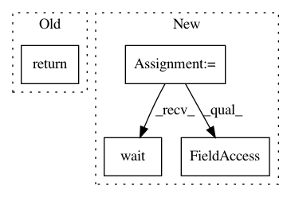

24b605e8ec48b9b67e507ca959eaed4ff4afc6a6,reframe/utility/os.py,,run_command,#Any#Any#Any#Any#,16
Before Change
cmd = shlex.split(cmd)
try:
return subprocess.run(cmd,
stdout=subprocess.PIPE,
stderr=subprocess.PIPE,
shell=shell,
universal_newlines=True,
timeout=timeout,
check=check)
except subprocess.CalledProcessError as e:
raise SpawnedProcessError(e.cmd, e.stdout, e.stderr,
e.returncode) from None
After Change
def run_command(cmd, check=False, timeout=None, shell=False):
try:
proc = run_command_async(cmd, shell=shell, start_new_session=True)
proc.wait(timeout=timeout)
except subprocess.TimeoutExpired as e:
os.killpg(proc.pid, signal.SIGKILL)
raise SpawnedProcessTimeout(e.cmd,
proc.stdout.read(),
proc.stderr.read(), timeout) from None
completed = subprocess.CompletedProcess(args=shlex.split(cmd),
returncode=proc.returncode,
stdout=proc.stdout.read(),
stderr=proc.stderr.read())
if check and proc.returncode != 0:
raise SpawnedProcessError(completed.args,
completed.stdout, completed.stderr,
completed.returncode)
return completed
In pattern: SUPERPATTERN
Frequency: 3
Non-data size: 4
Instances
Project Name: eth-cscs/reframe
Commit Name: 24b605e8ec48b9b67e507ca959eaed4ff4afc6a6
Time: 2018-02-14
Author: karakasis@cscs.ch
File Name: reframe/utility/os.py
Class Name:
Method Name: run_command
Project Name: ilastik/ilastik
Commit Name: b3c09f8cd9a89b6cf9b984078531e1e16ab4d737
Time: 2012-02-24
Author: opetra@ubuntu.(none)
File Name: classification/saveDialog.py
Class Name: SaveDialog
Method Name: exec_
Project Name: pantsbuild/pants
Commit Name: 3287103064771437314f0a664a2fe28d312abc82
Time: 2015-07-07
Author: john.sirois@gmail.com
File Name: src/python/pants/backend/python/tasks/pytest_run.py
Class Name: PytestRun
Method Name: _pex_run